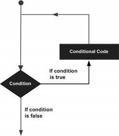

There may be a situation when you need to execute a block of code several number of times. In general, statements are executed sequentially. The first statement in a function is executed first, followed by the second, and so on.
Programming languages provide various control structures that allow for more complicated execution paths.
A loop statement allows us to execute a statement or group of statements multiple times and the following is the general form of a loop statement in most of the programming languages –

R programming language provides the following kinds of loop to handle looping requirements. Click the following links to check their detail.
|
Sr.No. |
Loop Type & Description |
|
1 |
Executes a sequence of statements multiple times and abbreviates the code that manages the loop variable. |
|
2 |
Repeats a statement or group of statements while a given condition is true. It tests the condition before executing the loop body. |
|
3 |
Like a while statement, except that it tests the condition at the end of the loop body. |
Loop Control Statements
Loop control statements change execution from its normal sequence. When execution leaves a scope, all automatic objects that were created in that scope are destroyed.
R supports the following control statements. Click the following links to check their detail.
|
Sr.No. |
Control Statement & Description |
|
1 |
Terminates the loop statement and transfers execution to the statement immediately following the loop. |
|
2 |
The next statement simulates the behavior of R switch. |